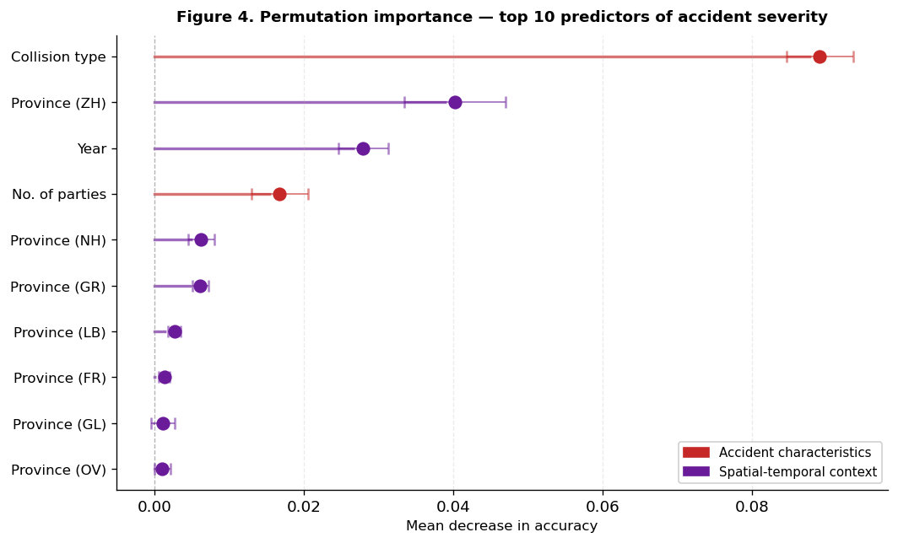
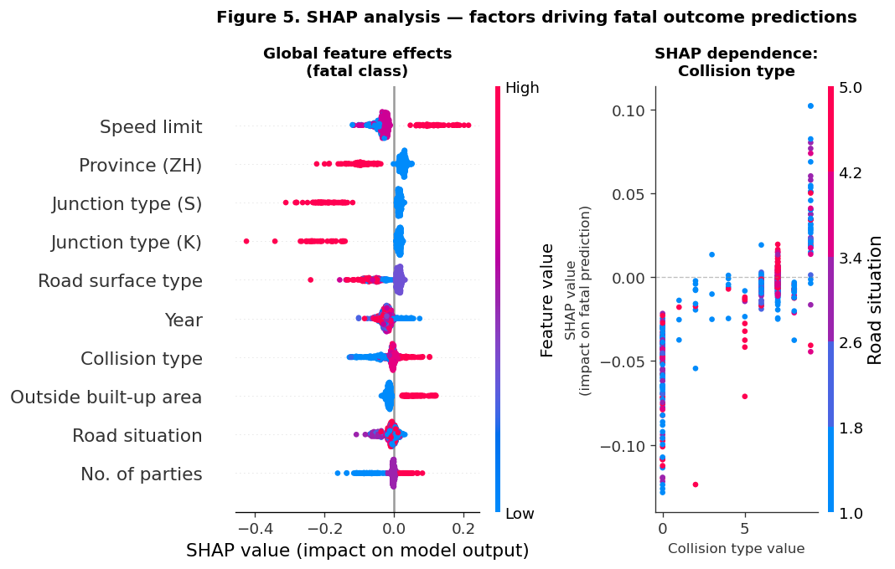

Evaluating accident-level predictions when fatal outcomes are rare.
I linked Dutch police accident and road-user records to study 150,536 accidents involving a bicycle or e-bike. I built random-forest classifiers to examine how recorded accident characteristics relate to severity.
Fatal accidents made up around 1.1% of the data, so I evaluated each severity class separately. I compared baseline and tuned models, then used permutation importance and SHAP to examine which variables influenced the baseline model’s predictions.
My contributionData preparation, model comparison, class diagnostics and interpretationToolsPython · pandas · scikit-learn · SHAP
Model evaluation
Does tuning improve every severity class?
Fatal accidents account for around 1.1% of the dataset. I used balanced class weights, stratified splits and macro F1 so that the largest classes would not determine the whole assessment.
Tuning improved test-set macro F1 slightly, but fatal-class F1 fell. The overall score therefore did not show whether the model had improved at identifying fatal accidents.
TEST MACRO F1 · BASELINE → TUNED0.451 → 0.456
Each severity class contributes equally to this average.
FATAL-CLASS F1 · BASELINE → TUNED0.092 → 0.085
The aggregate improvement did not extend to the rarest class.
Inspect the model diagnostics
30,108 held-out accidents, including 330 in the fatal class. Metrics below describe accident severity, not the cyclist’s individual outcome.
Of the accidents in each true class, how many did the model identify?
BaselineTuned
Where the baseline model was wrong
This saved confusion matrix belongs to the baseline model. Its 106 correctly identified fatal accidents sit alongside 224 fatal accidents assigned to other classes.
For the tuned model, fatal-class precision is 5.2% and recall is 23.6%. The analysis supports exploratory interpretation, not a reliable operational screening tool.
Interpreting the model
Which variables influence the predictions?
I compared permutation importance for overall accuracy with SHAP contributions to the fatal-class output. One evaluates the loss in overall accuracy when a variable is shuffled; the other examines its contribution to a particular class prediction.
Collision type leads the overall-accuracy ranking. Speed limit leads the fatal-class SHAP ranking, despite being absent from the permutation top ten. Neither ranking establishes a causal effect.
All severity classes
Overall-accuracy importance
Permutation importance · 3,000 test records · 10 repeats
Collision type
Province: Zuid-Holland
Year
Number of parties
Province: Noord-Holland
Top five in the saved baseline-model chart. The scoring measure is overall accuracy, so the common classes have much more influence.
Fatal-class model output
Fatal-class contributions
Tree SHAP · 500 test records
Speed limit
Province: Zuid-Holland
Junction type: S
Junction type: K
Road surface type
Top five in the saved SHAP beeswarm. These describe the model’s output on the explanation sample, not real-world fatality risk.
Study details
Model evaluation and limitations
Data, model and evaluation +
BRON police-registered accident records for 2015–2024 were linked to road-user records and filtered to accidents involving a bicycle or e-bike. The model used 12 source features covering accident characteristics, roads, environmental conditions and spatial-temporal context.
I used an 80/20 stratified split and a random forest with balanced class weights. Randomised tuning evaluated 20 parameter configurations with five-fold stratified cross-validation, optimising macro F1.
The tuned classifier used 200 trees, maximum depth 20, minimum leaf size 2 and log2 feature selection. Baseline and tuned results are distinguished throughout this page.
Interpretation and limitations +
“Fatal” describes the accident as a whole. The cyclist was not necessarily the person who died. Police recording also underrepresents less severe incidents, and the dataset has no cycling-exposure denominator.
Missing-value imputation occurred before the original train/test split. A stronger evaluation would learn preprocessing within training folds and use a later time period as a separate test. The reported scores should therefore be treated as exploratory.
The importance measures describe associations learned by a classifier. They do not identify causes, intervention effects or a calibrated probability of death.
Saved results and original explanation figures +
Diagnostics were recovered from the original notebook without refitting. The baseline confusion counts were transcribed from its labelled saved figure; tuned metrics retain the precision of the saved table. Importance rankings come from the saved charts. Their underlying numerical arrays were not reconstructed.

Original saved notebook Figure 4. Overall-accuracy permutation importance, baseline model.

Original saved notebook Figure 5. Fatal-class SHAP contributions, baseline model.
Source: CASA0006 Data Science for Spatial Systems, UCL, 2026.